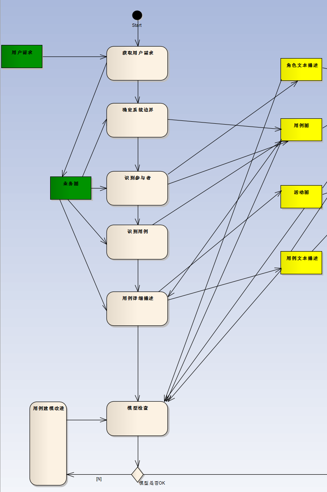

面向对像系统设计-用例建模

1.1 确定系统边界并识别系统参于者。输出-业务图、用例图、角色描述文本
1.2 识别系统用例（同时完成用例编号）。输出-用例图
1.3 细化用例规约。输出-用例图、用例描述文本、时序图承载的业务场景描述、活动图承载的事件流描述
1.3.1 用例简述，简要说明该功能的目的。
1.3.2 前、后置条件描述。
1.3.3 特殊需求描述。
1.3.4 用例所覆盖的所有业务场景描述、业务场景归纳出的事件流描述。
1.4 用例模型检查。
检查的主要方面：
1.4.1 功能是否覆盖全面？
1.4.2 是否存在二义性？
1.4.3 是否存在不一致性？
1.4.4 是否晦涩难懂？